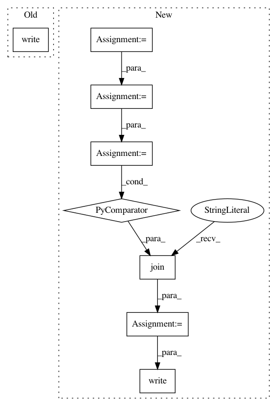

c981834790d4167f1b01a00b795dfc1023f647c2,torch_geometric/io/off.py,,write_off,#Any#Any#,60
Before Change
torch.set_printoptions(threshold=float("inf"))
with open(path, "w") as f:
f.write("OFF\n{} {} 0\n".format(num_nodes, num_faces))
f.write(re.sub(REGEX, r"", data.pos.__repr__()))
f.write("\n")
f.write(re.sub(REGEX, r"", face.__repr__()))
f.write("\n")
torch.set_printoptions(threshold=threshold)
After Change
num_nodes, num_faces = data.pos.size(0), data.face.size(1)
pos = data.pos.to(torch.float)
face = data.face.t()
num_vertices = torch.full((num_faces, 1), face.size(1), dtype=torch.long)
face = torch.cat([num_vertices, face], dim=-1)
threshold = PRINT_OPTS.threshold
torch.set_printoptions(threshold=float("inf"))
pos_repr = re.sub(",", "", _tensor_str(pos, indent=0))
pos_repr = "\n".join([x[2:-1] for x in pos_repr.split("\n")])[:-1]
face_repr = re.sub(",", "", _tensor_str(face, indent=0))
face_repr = "\n".join([x[2:-1] for x in face_repr.split("\n")])[:-1]
with open(path, "w") as f:
f.write("OFF\n{} {} 0\n".format(num_nodes, num_faces))
f.write(pos_repr)
f.write("\n")
f.write(face_repr)
f.write("\n")
torch.set_printoptions(threshold=threshold)
In pattern: SUPERPATTERN
Frequency: 4
Non-data size: 8
Instances
Project Name: rusty1s/pytorch_geometric
Commit Name: c981834790d4167f1b01a00b795dfc1023f647c2
Time: 2020-05-22
Author: matthias.fey@tu-dortmund.de
File Name: torch_geometric/io/off.py
Class Name:
Method Name: write_off
Project Name: facebookresearch/ParlAI
Commit Name: 9b8d5f3516b68250c0e43d348e7ec88abfb3fa13
Time: 2018-10-30
Author: roller@fb.com
File Name: docs/source/generate_zoo_list.py
Class Name:
Method Name:
Project Name: pytorch/fairseq
Commit Name: 8bafae2ee7044529543768eec63d8460d894f5c6
Time: 2017-10-19
Author: myleott@fb.com
File Name: train.py
Class Name:
Method Name: validate